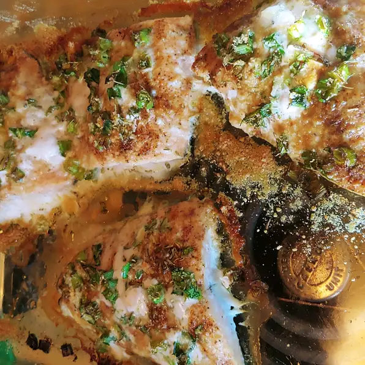

Back to Main
Salmon Recipe

Description
Something I created myself when trying to figure out what to do with some salmon steaks, spinach, chives, and thyme ended up being very delicious. Serve with sweet potato fries and acorn squash or with your choice of sides.
Ingredients
- 1/4 cup Olive oil
- 2 Salmon steaks
- 1 tbsp Garlic salt
- 1 tbsp Onion salt
- 1 tbsp Paprika
- 1 1/2 tsp Ground black pepper
- 1 1/2 tsp Salt
- 1 tbsp Chopped chives
- 2 tsp Chopped fresh thyme
- 4 leaves Fresh spinach
- 1/4 cup Parmesan cheese
Steps
- Preheat oven to 350 degrees F (175 degrees C). Lightly grease an 8x8-inch baking dish with olive oil.
- Pour 1/4 cup olive oil in a shallow bowl and dip salmon steaks in oil to coat. Stir garlic salt, onion salt, paprika, black pepper, and salt together in a small bowl; sprinkle seasoning onto salmon.
- Place salmon steaks into the prepared baking dish and sprinkle with chives, thyme, and spinach leaves. Sprinkle Parmesan cheese over the fish and seasonings.
- Bake in the preheated oven until the salmon is cooked through and the flesh flakes easily, about 45 minutes.
Back to Top